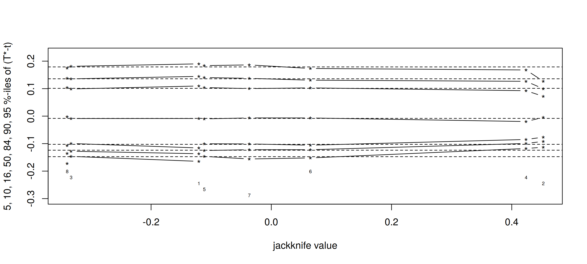
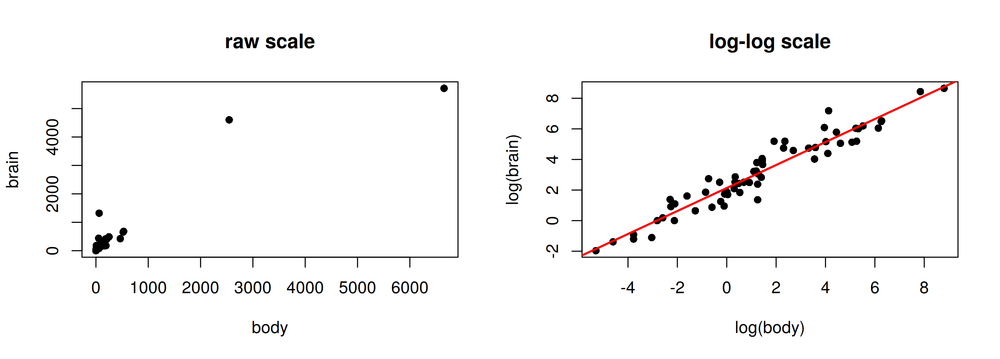

set.seed(4750); x <- rexp(12); n <- length(x)
th.jack <- sapply(1:n, function(i) mean(x[-i]))
c(jackknife = sqrt((n - 1) / n * sum((th.jack - mean(th.jack))^2)), usual = sd(x) / sqrt(n))jackknife usual
0.1896 0.1896 MATH 4750 / MSSC 5750 Computational Statistics
Marquette University
MATH 4750 - Spring 2027
\[ \widehat\mathrm{bias}_{\text{jack}} = (n-1)\big(\bar{\hat\theta}_{(\cdot)} - \hat\theta\big),\qquad \widehat\mathrm{se}_{\text{jack}} = \sqrt{\frac{n-1}{n}\sum_{i=1}^n\big(\hat\theta_{(i)} - \bar{\hat\theta}_{(\cdot)}\big)^2}. \]
For \(\hat\theta = \bar x\): \(\hat\theta_{(i)} = \dfrac{n\bar x - x_i}{n-1}\) and \(\bar{\hat\theta}_{(\cdot)} = \bar x\), so
\[ \hat\theta_{(i)} - \bar{\hat\theta}_{(\cdot)} = \frac{\bar x - x_i}{n-1} \quad\Rightarrow\quad \frac{n-1}{n}\sum_{i=1}^n\big(\hat\theta_{(i)}-\bar{\hat\theta}_{(\cdot)}\big)^2 = \frac{1}{n(n-1)}\sum_{i=1}^n(x_i-\bar x)^2 = \frac{S^2}{n}. \]
The jackknife SE of the mean is exactly the usual \(S/\sqrt n\).
Suppose \(\mathrm{E}[\hat\theta_n] = \theta + \dfrac{b_1(\theta)}{n} + \dfrac{b_2(\theta)}{n^2} + \cdots\). Each replicate uses \(n-1\) points, so
\[ \mathrm{E}\big[\bar{\hat\theta}_{(\cdot)}\big] - \mathrm{E}[\hat\theta] = \frac{b_1}{n-1} - \frac{b_1}{n} + O(n^{-3}) = \frac{b_1}{n(n-1)} + O(n^{-3}). \]
Multiplying by \((n-1)\) estimates the leading bias \(b_1/n\). The bias-corrected estimator
\[ \hat\theta_{\text{jack}} = \hat\theta - \widehat\mathrm{bias}_{\text{jack}} = n\hat\theta - (n-1)\bar{\hat\theta}_{(\cdot)} \]
has bias \(O(n^{-2})\): the \(1/n\) term cancels.
Check: for \(\hat\theta = \frac1n\sum(x_i-\bar x)^2\) (bias \(-\sigma^2/n\)), \(\widehat\mathrm{bias}_{\text{jack}} = -S^2/n\) and \(\hat\theta_{\text{jack}} = S^2\).
The jackknife can fail when the statistic is not smooth. Median of 10 integers:
[1] 47 47 47 47 47 49 49 49 49 49jackknife_se bootstrap_se
3.00 7.69 Fix for non-smooth statistics: the delete-\(d\) jackknife with \(\sqrt n < d < n-1\) (Shao and Wu, 1989): \(\widehat\mathrm{se}_{d\text{-jack}} = \left\{\frac{n-d}{d\binom nd}\sum_z\big(\hat\theta_{(z)} - \bar{\hat\theta}_{(\cdot)}\big)^2\right\}^{1/2}\).
djack_se <- function(x, d, stat = median, maxsub = 5000) {
n <- length(x)
subs <- if (choose(n, d) <= maxsub) combn(n, d) else replicate(maxsub, sample(n, d)) # all or a random subset
th <- apply(subs, 2, function(z) stat(x[-z]))
sqrt((n - d) / d * mean((th - mean(th))^2))
}
set.seed(4750); x <- rnorm(40)
c(delete1 = djack_se(x, 1), delete10 = djack_se(x, 10),
bootstrap = sd(replicate(2000, median(sample(x, replace = TRUE)))),
asymptotic = sqrt(pi / 2) / sqrt(40)) delete1 delete10 bootstrap asymptotic
0.05027 0.26787 0.26189 0.19817 \[ \tilde\theta_i = n\hat\theta - (n-1)\hat\theta_{(i)},\qquad \hat\theta_{\text{jack}} = \frac1n\sum_i\tilde\theta_i,\qquad \widehat\mathrm{se}_{\text{jack}} = \frac{s_{\tilde\theta}}{\sqrt n}. \]
\(X\sim U(0,\theta)\), \(\hat\theta = X_{(n)}\) with \(\mathrm{E}X_{(n)} = \frac{n}{n+1}\theta\) (biased). Here \(\bar{\hat\theta}_{(\cdot)} = \frac{n-1}{n}X_{(n)} + \frac1nX_{(n-1)}\), so
\[ \hat\theta_{\text{jack}} = X_{(n)} + \frac{n-1}{n}\big(X_{(n)} - X_{(n-1)}\big). \]
set.seed(4750); N <- 20000
res <- sapply(c(10, 30, 100), function(n) {
r <- replicate(N, { s <- sort(runif(n, 0, 5)); mx <- s[n]; jk <- mx + (n - 1) / n * (mx - s[n - 1])
c(abs(5 - jk) < abs(5 - mx), abs(5 - jk), abs(5 - mx)) })
rowMeans(r)
})
dimnames(res) <- list(c("P(|jack err| < |max err|)", "mean |jack - 5|", "mean |max - 5|"), c("n=10", "n=30", "n=100"))
round(res, 4) n=10 n=30 n=100
P(|jack err| < |max err|) 0.6948 0.6762 0.6682
mean |jack - 5| 0.4343 0.1575 0.0498
mean |max - 5| 0.4588 0.1605 0.0503| Jackknife | Bootstrap | |
|---|---|---|
| Resamples | \(n\) deterministic | \(B\) random |
| Bias, SE | yes (smooth statistics) | yes |
| Confidence intervals | rough | yes (percentile, BCa, \(t\)) |
| Non-smooth statistics | fails (delete-1) | works |
| Used for | BCa acceleration, influence, JaB | most inference |
\(\widehat\mathrm{se}_B(\hat\theta)\) is itself random. To estimate its standard error, leave out \(x_i\), and recompute \(\widehat\mathrm{se}_B\) using only the bootstrap samples that do not contain \(x_i\): no new resampling!
\[ \widehat\mathrm{se}_{B(i)} = \sqrt{\frac{1}{B(i)}\sum_{j\in J(i)}\big[\hat\theta^{(j)} - \bar{\hat\theta}_{(J(i))}\big]^2},\qquad \widehat\mathrm{se}\big(\widehat\mathrm{se}_B\big) = \widehat\mathrm{se}_{\text{jack}}\big(\widehat\mathrm{se}_{B(1)},\dots,\widehat\mathrm{se}_{B(n)}\big). \]
set.seed(1111)
theta.boot <- function(patch, i) mean(patch[i, "y"]) / mean(patch[i, "z"])
boot.out <- boot(patch, statistic = theta.boot, R = 2000)
A <- boot.array(boot.out) # B x n matrix of frequencies
theta.b <- boot.out$t
n <- NROW(patch); jack.se <- numeric(n)
for (i in 1:n) {
keep <- which(A[, i] == 0) # samples that omit x_i
jack.se[i] <- sd(theta.b[keep])
}
c(se_boot = sd(theta.b), se_of_se = sqrt((n - 1) * mean((jack.se - mean(jack.se))^2)),
avg_B_i = mean(colSums(A == 0))) se_boot se_of_se avg_B_i
0.10098 0.02856 685.50000 
Resampling cases (pairs)
Resampling errors (residuals)
L <- lm(magnetic ~ chemical, data = iron)
m <- 2000; n <- NROW(iron); L1 <- numeric(m); set.seed(4750)
for (b in 1:m) {
i <- sample(1:n, replace = TRUE)
L1[b] <- coef(lm(magnetic ~ chemical, data = iron[i, ]))[2]
}
beta_case <- function(dat, i) coef(lm(magnetic ~ chemical, data = dat[i, ]))[2]
set.seed(4750); boot.cases <- boot(iron, beta_case, R = 2000)
c(slope = coef(L)[2], se_lm = summary(L)$coef[2, 2], se_loop = sd(L1), se_boot = sd(boot.cases$t))slope.chemical se_lm se_loop se_boot
0.9158 0.1190 0.1219 0.1280 BOOTSTRAP CONFIDENCE INTERVAL CALCULATIONS
Based on 2000 bootstrap replicates
CALL :
boot.ci(boot.out = boot.cases, type = c("perc", "bca"))
Intervals :
Level Percentile BCa
95% ( 0.6662, 1.1590 ) ( 0.6885, 1.1947 )
Calculations and Intervals on Original Scalemammals Data
y <- log(mammals$brain); x <- log(mammals$body)
L <- lm(y ~ x); n <- length(y)
r <- residuals(L) / sqrt(1 - hatvalues(L)); r <- r - mean(r) # modified, centered residuals
set.seed(4750); m <- 2000; estsE <- numeric(m)
for (b in 1:m) {
ystar <- fitted(L) + sample(r, replace = TRUE)
estsE[b] <- coef(lm(ystar ~ x))[2]
}
model_based <- function(dat, i) { ystar <- dat$fit + dat$r[i]; coef(lm(ystar ~ dat$x))[2] }
dat <- data.frame(x = x, fit = fitted(L), r = r)
set.seed(4750); boot.err <- boot(dat, model_based, R = 2000)
c(slope = coef(L)[2], se_lm = summary(L)$coef[2, 2], se_errors = sd(estsE), se_boot_fn = sd(boot.err$t)) slope.x se_lm se_errors se_boot_fn
0.75169 0.02846 0.02868 0.02820 Example 9.10 (patch ratio):